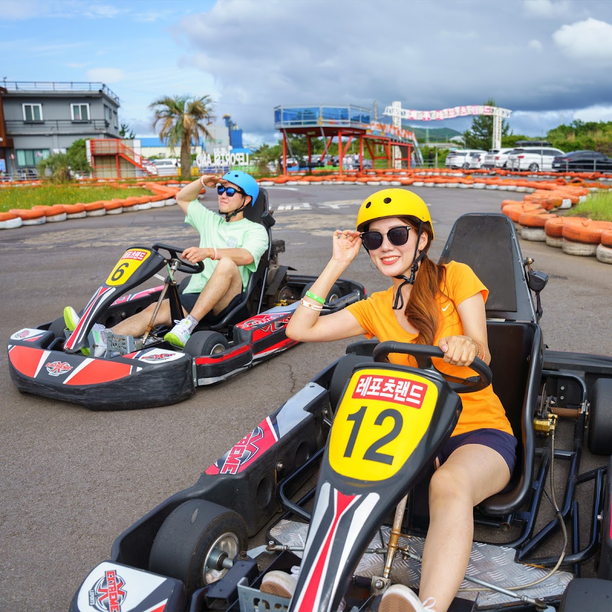

Jeju Leports Land: A Practical Guide to Jeju’s Outdoor Adventure Park
At a glance: Jeju Leports Land is an activity park in Jocheon-eup, Jeju City, suited to visitors looking for a break from beaches and sightseeing. Recent visitor descriptions mention go-karts, ziplining, seasonal sledding, ATV or buggy rides, shooting activities and survival games. Check directly with the park to confirm which activities are operating, their requirements and current prices before you go.
Address: 47 Waheulsangseo 2-gil, Jocheon-eup, Jeju City, Jeju Special Self-Governing Province, South Korea
Google rating: 4.6/5 from 4,600 reviews in the provided current listing data
What to expect
Jeju Leports Land is an option for travelers who want an active day out rather than another scenic stop. The park brings several leisure activities together in one place, so it can work well for families, groups of friends and visitors who enjoy trying different kinds of rides. The main draw highlighted in recent visitor posts is the go-kart track, with other outdoor activities also described.
Online descriptions mention ziplining, all-season sledding, shooting, survival games and ATV or mountain-buggy experiences. These reports are useful for understanding the park’s general character, but they are not a guarantee that every activity is available on the day you visit. Operations can depend on conditions, maintenance and other factors. Check the official website or contact the park before setting out, especially if one particular activity is the reason for your visit.
Think of this as an activity stop, not a traditional sightseeing attraction. You may spend more time taking part in rides and games than exploring a landscape or museum. If your group has different interests, the range of reported activities may make it easier to plan a shared outing—but confirm the current choices and any age, height, weight or safety requirements in advance.
Go-karting and choosing activities
Go-karting appears to be one of the park’s signature experiences. Recent visitor descriptions refer to a long track and both single- and two-person kart options. Those details come from visitor reports, so check with the park for the current track setup, available kart types and passenger rules. A two-person kart may be useful for some families, but do not assume that every child can ride as a passenger; staff can explain the applicable restrictions.
When comparing activities, consider how much time and energy your group wants to spend. A kart session may suit visitors looking for speed and friendly competition, while a zipline or sledding run offers a different kind of thrill. For an outing with children, ask about minimum participation requirements and whether an adult needs to accompany them. For ATV or buggy activities, clarify whether visitors drive themselves or ride with an instructor, and what protective equipment is supplied.
Planning your visit
Allow enough flexibility for check-in, safety instructions and any wait for popular activities. The park’s actual operating hours and ride availability are not confirmed here, and online listings may differ by season or weather. Before visiting, check the official website for current information or contact the park directly. If you are traveling on a tight schedule, confirm how much time to allow for the specific activities you hope to do.
Wear comfortable clothes and closed-toe shoes suitable for outdoor activities. Bring a light layer if the weather is changeable, and secure loose items before rides. Follow staff instructions and posted safety rules, particularly when children are participating. If rain, wind or other weather could affect your plans, verify whether outdoor activities are operating before making the trip.
Location and getting there
The park is at 47 Waheulsangseo 2-gil in Jocheon-eup, within Jeju City. For navigation, enter “Jeju Leports Land” or paste the Korean or romanized address into your map app. Jeju’s attractions can be spread out, so check the route from your accommodation and confirm the best transport option for your itinerary. Do not rely on an unfamiliar address format alone: use the map pin linked below and check that your destination is the park before departing.
If you are combining the visit with other stops, plan your route around the activities you want to do rather than assuming the park will be a brief detour. Confirm the day’s operating status first, then leave time for travel and any on-site waiting.
Good to know
- Check activity details first: The mix of rides and games described online may change. Confirm what is currently running, along with prices and participation rules.
- Ask about children’s requirements: Age, height or other restrictions may apply. Verify them directly rather than relying on general travel posts.
- Plan for outdoor conditions: Weather can affect outdoor activities. Check the day’s status if conditions are poor or uncertain.
- Use the map pin: The address is in Jocheon-eup, Jeju City. Open the Google Maps link below to navigate to the listed location.
- Ratings are a snapshot: The 4.6 rating and 4,600-review count reflect the provided Google listing data; ratings and counts can change.
Useful links
FAQ
What activities can visitors do at Jeju Leports Land?
Recent visitor descriptions mention go-karts, ziplining, seasonal sledding, shooting, survival games and ATV or buggy rides. Confirm current availability directly with the park.
Is Jeju Leports Land suitable for children?
Families do visit, and some descriptions mention child-friendly options. However, age, height and passenger restrictions may apply to individual activities, so ask the park about the rules for your child before visiting.
Do I need to check anything before going?
Yes. Confirm operating hours, activity availability, prices, safety requirements and weather-related changes through the official website or by contacting the park.